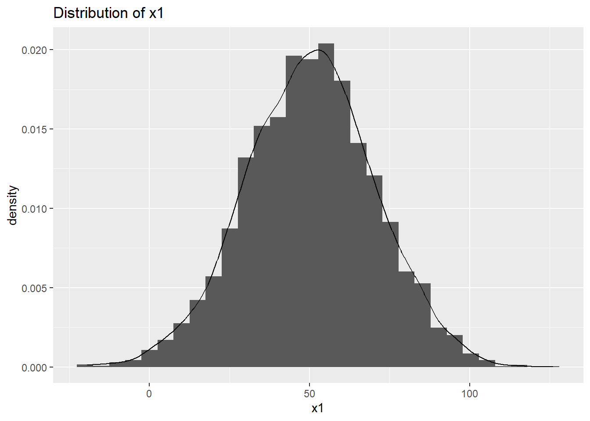
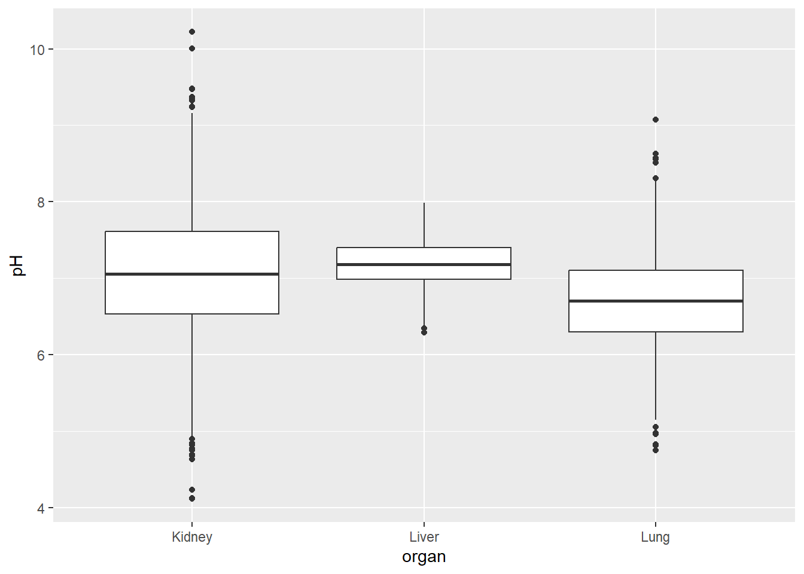

library(tidyverse)
library(rstatix)
library(ggpubr)6 Analyses Bivariées
6.1 Simulation d’un jeu de données
set.seed(15344250) # Toujours reproduire les mêmes simulations
n <- 5000
id <- 1:n
x1 <- rnorm(n, 50, 20) # simulation d'une loi normale de moyenne 50 et d'écart-type 20
x2 <- rnorm(n, 0,1) # simulation d'une loi normale centrée réduite
z1 <- rnorm(n, x1, 10) # simulation d'une loi normale de moyenne x et d'écart-type 10
z2 <- exp(x2) # z2 est égal à l'exponentielle de x2
y <- runif(n, min = 20, max = 80) # simulation d'une loi uniforme entre 20 et 80
status <- rbinom(n, size = 1, prob = 0.3) # Simulation d'une loi binomiale de taille n avec proba 0.5
cat <- sample(c("Lung", "Liver", "Kidney"), n, prob = c(0.4, 0.1, 0.5), replace = T) # Tirage d'une vecteur aléatoire de taille n qui prend ses valeurs parmi "Lung" "Liver" et "Kidney"
Continent <- sample(c("Africa", "North America", "South America", "Asia", "Europe", "Oceania"), n, replace = T)
df <- data.frame("id" = id,
"x1" = x1,
"x2" = x2,
"y" = y,
"z1" = z1,
"z2" = z2,
"status" = status,
"organ" = cat,
"continent" = Continent)
df <- mutate(df, status = as.factor(status))
df$pH <- with(df, ifelse(organ == "Lung", rnorm(n, mean = 6.7, sd =0.6),
ifelse(organ == "Liver", rnorm(n, mean = 7.2, sd = 0.3),
rnorm(n, mean = 7, sd = 0.8))))6.2 Analyse de corrélation entre 2 variables
6.2.1 Deux variables quantitatives
Je vais utiliser les vecteurs x1, x2, y et z1 et z2. On s’attend à ce que les vecteurs x1 et y ainsi que les vecteurs x1 et x2 ne soient pas corrélés mais que les vecteurs x1 et z1 et les vecteurs x2 et z2 le soient
Le calcul d’un coefficient de corrélation dans R se fait avec la fonction cor() dans laquelle on précise quel coefficient l’on souhaite via l’argument method
6.2.2 Travail préalable
Avant de commencer, on peut tracer des graphiques pour visualiser la distribution de chaque variable, ainsi que la relation entre les deux variables à étudier.
Distribution des variables
ggplot(df, aes(x1))+
geom_histogram(aes(y=after_stat(density)))+
geom_density()+
ggtitle("Distribution of x1")`stat_bin()` using `bins = 30`. Pick better value with `binwidth`.
ggplot(df, aes(x2))+
geom_histogram(aes(y=after_stat(density)))+
geom_density()+
ggtitle("Distribution of x2")`stat_bin()` using `bins = 30`. Pick better value with `binwidth`.ggplot(df, aes(y))+
geom_histogram(aes(y=after_stat(density)))+
geom_density()+
ggtitle("Distribution of y")`stat_bin()` using `bins = 30`. Pick better value with `binwidth`.ggplot(df, aes(z1))+
geom_histogram(aes(y=after_stat(density)))+
geom_density()+
ggtitle("Distribution of z1")`stat_bin()` using `bins = 30`. Pick better value with `binwidth`.ggplot(df, aes(z2))+
geom_histogram(aes(y=after_stat(density)))+
geom_density()+
ggtitle("Distribution of z2")`stat_bin()` using `bins = 30`. Pick better value with `binwidth`.Remarque : On peut également regarder la normalité d’une distribution en traçant un qqplot (qui permet de comparer la distribution d’un échantillon à une distribution Normale). On le fait en utilisant la fonction qqnorm() de R base ou la fonction ggqqplot() du package ggpubr
qqnorm(df$x1)library(ggpubr)
ggqqplot(df$x1)x1 a bien l’air de suivre une loi normale
qqnorm(df$y)y n’a pas l’air de suivre une loi normale
Remarque 2 : Si on veut tester statistiquement la normalité de la distribution, on peut utiliser le test de Shapiro-Wilk dont l’hypothèse nulle est la normalité de la distribution
shapiro.test(df$x1)
Shapiro-Wilk normality test
data: df$x1
W = 0.99961, p-value = 0.4404shapiro.test(df$y)
Shapiro-Wilk normality test
data: df$y
W = 0.95769, p-value < 2.2e-16Relation entre les variables
ggplot(df, aes(x1, x2))+
geom_point()+
ggtitle("Relation entre x1 et x2")ggplot(df, aes(x1, y))+
geom_point()+
ggtitle("Relation entre x1 et y")ggplot(df, aes(x1, z1))+
geom_point()+
ggtitle("Relation entre x1 et z1")ggplot(df, aes(x2, z2))+
geom_point()+
ggtitle("Relation entre x2 et z2")Coefficient de corrélation de Pearson
Rappel : Le coefficient de corrélation de Pearson mesure une corrélation linéaire Il prend une valeur entre -1 (corrélation linéaire parfaite négative) et 1 (corrélation linéaire parfaite positive).
Ce coefficient ne peut être utilisé que sur des variables suivant une loi normale
cor(df$x1, df$x2, method = "pearson")[1] -0.01583424cor(df$x1, df$z1, method = "pearson")[1] 0.8966091Test de la significativité du coefficient de corrélation avec la fonction cor.test()
Rappel : L’hypothèse nulle est l’indépendence entre les deux variables
cor.test(df$x1, df$x2, method = "pearson")
Pearson's product-moment correlation
data: df$x1 and df$x2
t = -1.1196, df = 4998, p-value = 0.263
alternative hypothesis: true correlation is not equal to 0
95 percent confidence interval:
-0.04353443 0.01189027
sample estimates:
cor
-0.01583424 On ne rejette pas \(H_0\)
cor.test(df$x1, df$z1, method = "pearson")
Pearson's product-moment correlation
data: df$x1 and df$z1
t = 143.14, df = 4998, p-value < 2.2e-16
alternative hypothesis: true correlation is not equal to 0
95 percent confidence interval:
0.8910350 0.9019128
sample estimates:
cor
0.8966091 On rejette \(H_0\)
Cette fonction calcule directement le coefficient de corrélation et le test de significativité
Coefficient de corrélation de Spearman
Rappel : Le coefficient de Spearman est l’équivalent non paramétrique du coefficient de Pearson, il est utilisé lorsque les variable ne suivent pas une distribution normale ou lorsque la relation entre les deux variables n’est pas linéaire (mais tout de même monotone)
Il s’agit d’une statistique de rang : pour la calculer on regarde les rangs associés aux deux variables et non leurs valeurs
Dans notre exemple, ce coefficient est donc adapté pour étudier la corrélation entre x1 et y et entre X2 et Z2.
cor(df$x1, df$y, method = "spearman")[1] 0.004370197cor(df$x2, df$z2, method = "spearman")[1] 1Remarque : on n’obtient pas à la même chose avec le coefficient de Pearson
cor(df$x2, df$z2, method = "pearson")[1] 0.7712232De même, pour étudier la significativité du coefficient dans notre échantillon, on utilise la fonction cor.test() en précisant method=“spearman”
L’hypothèse nulle du test est l’indépendence entre les deux variables
cor.test(df$x1, df$y, method = "spearman")
Spearman's rank correlation rho
data: df$x1 and df$y
S = 2.0742e+10, p-value = 0.7574
alternative hypothesis: true rho is not equal to 0
sample estimates:
rho
0.004370197 On ne rejette pas \(H_0\)
cor.test(df$x2, df$z2, method = "spearman")
Spearman's rank correlation rho
data: df$x2 and df$z2
S = 2.313e-06, p-value < 2.2e-16
alternative hypothesis: true rho is not equal to 0
sample estimates:
rho
1 On rejette \(H_0\)
Tau de Kendall
Rappel : Relativement similaire au coefficient de Spearman. Le tau de Kendall est à préférer dans des petits échantillons ou lorsqu’il y a beaucoup d’égalités de rangs
cor(df$x1, df$y, method = "kendall")[1] 0.00289946cor(df$x2, df$z2, method = "kendall")[1] 1De même, pour étudier la significativité du coefficient dans notre échantillon, on utilise la fonction cor.test() en précisant method=“spearman”. L’hypothèse nulle est toujours l’indépendance entre les deux variables.
cor.test(df$x1, df$y, method = "kendall")
Kendall's rank correlation tau
data: df$x1 and df$y
z = 0.30743, p-value = 0.7585
alternative hypothesis: true tau is not equal to 0
sample estimates:
tau
0.00289946 On ne rejette pas \(H_0\)
cor.test(df$x2, df$z2, method = "kendall")
Kendall's rank correlation tau
data: df$x2 and df$z2
z = 106.03, p-value < 2.2e-16
alternative hypothesis: true tau is not equal to 0
sample estimates:
tau
1 On rejette \(H_0\)
6.2.3 Deux variables catégorielles
Test du chi-2 d’indépendance
Pour étudier la corrélation entre deux variables qualitatives on utilise en général le test du chi-2
Attention : ce test ne fonctionne que pour des échantillons indépendants (non-appariés)
Avant de commencer, on peut faire un tableau de contingence avec la fonction table()
table(df$status, df$organ)
Kidney Liver Lung
0 1737 349 1377
1 722 146 669table(df$organ, df$continent)
Africa Asia Europe North America Oceania South America
Kidney 411 431 375 447 403 392
Liver 73 81 83 79 96 83
Lung 380 307 345 341 323 350Rappel l’hypothèse nulle du test du chi-2 est l’indépendence entre les deux variables
La fonction pour realiser le test du chi-2 est chisq.test()
chisq.test(df$status, df$organ)
Pearson's Chi-squared test
data: df$status and df$organ
X-squared = 6.2391, df = 2, p-value = 0.04418Au seuil de 5% on rejette \(H_0\), mais au seuil de 1% on ne la rejette pas
chisq.test(df$organ, df$continent)
Pearson's Chi-squared test
data: df$organ and df$continent
X-squared = 16.769, df = 10, p-value = 0.07964Remarque : Pour povoir réaliser un test du chi-2, il faut que les effectifs théoriques de chaque combinaisons de modalité soient supérieurs à 5. Si ce n’est pas le cas, il devrait y avoir un warning à l’exécution de la fonction “Chi-squared approximation may be incorrect”.
Il est possible de visualiser le tableau des effectifs théoriques en accédant à la données expected du test
chisq.test(df$status, df$organ)$expected df$organ
df$status Kidney Liver Lung
0 1703.1034 342.837 1417.0596
1 755.8966 152.163 628.9404Plot avec test du chi-2
library(vcd)Loading required package: gridmosaic(~ status + organ,
direction = c("v", "h"),
data = df,
shade = TRUE
)Remarque : ici tout est gris car les effectifs ne dévient pas trop des effectifs théoriques. Quand les effectifs observés sont plus petits que les théoriques les barres sont colorées en rouge et quand ils sont plus grands en bleu
Test exact de Fisher
S’il y a un effectif théorique inférieur à 5, on peut soit regrouper des catégories pour n’avoir que des effectifs supérieurs à 5, soit utiliser un test exact de Fisher qui ne nécéssite pas cette hypothèse.
En R, ce test s’effectue avec la fonction fisher.test()
fisher.test(df$status, df$organ)
Fisher's Exact Test for Count Data
data: df$status and df$organ
p-value = 0.04505
alternative hypothesis: two.sided6.2.4 Une v=Variable Quantitave et Une Variable Qualitative
l’ANOVA (ANalysis Of VAriance)
On utilise l’ANOVA lorsque l’on souhaite expliquer une variable quantitative par une variable qualitative.
Dans notre exemple, on veut regarder si l’organe a une influence sur la variable x1.
ggplot(df, aes(x=organ, y=pH))+ geom_boxplot()
Rappel :
On note \(Y_{i,k}\) la variable aléatoire qui modélise la pH du \(k-ième\) individu pour l’organe \(i\).
Le modèle de l’ANOVA s’écrit :
\[ Y_{i,k} = \mu + \alpha_i + E_{i,k} \]
Avec
où \(\mu\) décrit l’effet moyen et \(\alpha_i\) represente l’effet du à la modalité i.
Une anova à 1 facteur est donc une regression lineaire particulière.
Dans R :
Première methode : la commande lm
La commande à executer est la suivant :
\[ \text{lm}(\text{Variable quantitative} \sim \text{Variable qualitative}, \text{ data} = \text{dataset} ) \]
###---Methode lm---###
Mod.Anova <- lm(pH ~organ, data = df)
summary(Mod.Anova)
Call:
lm(formula = pH ~ organ, data = df)
Residuals:
Min 1Q Median 3Q Max
-2.9381 -0.4234 0.0023 0.4366 3.1688
Coefficients:
Estimate Std. Error t value Pr(>|t|)
(Intercept) 7.05267 0.01393 506.337 < 2e-16 ***
organLiver 0.14226 0.03403 4.181 2.95e-05 ***
organLung -0.35743 0.02067 -17.294 < 2e-16 ***
---
Signif. codes: 0 '***' 0.001 '**' 0.01 '*' 0.05 '.' 0.1 ' ' 1
Residual standard error: 0.6907 on 4997 degrees of freedom
Multiple R-squared: 0.07167, Adjusted R-squared: 0.0713
F-statistic: 192.9 on 2 and 4997 DF, p-value: < 2.2e-16Puis, la commande lm permet de créer une table de variance
anova(Mod.Anova)Analysis of Variance Table
Response: pH
Df Sum Sq Mean Sq F value Pr(>F)
organ 2 184.06 92.028 192.9 < 2.2e-16 ***
Residuals 4997 2383.94 0.477
---
Signif. codes: 0 '***' 0.001 '**' 0.01 '*' 0.05 '.' 0.1 ' ' 1Deuxième méthode : la commande aov
aov.pH <- aov(pH~organ, data=df)
summary(aov.pH) Df Sum Sq Mean Sq F value Pr(>F)
organ 2 184.1 92.03 192.9 <2e-16 ***
Residuals 4997 2383.9 0.48
---
Signif. codes: 0 '***' 0.001 '**' 0.01 '*' 0.05 '.' 0.1 ' ' 1Attention : Il faut verifer les hypothèses du modèle avant d’interpreter les résultats.
Interprétation
anova(Mod.Anova)Analysis of Variance Table
Response: pH
Df Sum Sq Mean Sq F value Pr(>F)
organ 2 184.06 92.028 192.9 < 2.2e-16 ***
Residuals 4997 2383.94 0.477
---
Signif. codes: 0 '***' 0.001 '**' 0.01 '*' 0.05 '.' 0.1 ' ' 1On lit la p-value dans la colonne Pr(>F), ici \(p-value = 2.2e-16\). Donc \(p<0.05\), On rejette l’hypothèse que les moyennes des groupes sont toutes égales et on conclue qu’il y a une difference significative.
Vérification des hypothèses
residus <- residuals(Mod.Anova)
shapiro.test(residus)
Shapiro-Wilk normality test
data: residus
W = 0.99689, p-value = 1.129e-08qqnorm(residus)
qqline(residus, col = "red")l’hypothèse de normalité des résidus est rejetée et l’Anova n’est pas adaptée ici.
Test de Kruskal-wallis
Lorsque les conditions de l’anova ne sont pas remplies (non-normalité notamment), on peut utiliser un test non paramétrique de Kruskal-Wallis.
test <- kruskal.test(pH ~ organ, data = df)
test
Kruskal-Wallis rank sum test
data: pH by organ
Kruskal-Wallis chi-squared = 426.36, df = 2, p-value < 2.2e-16On lit la p-value dans la colonne Pr(>F), ici \(p-value = 2.2e-16\). Donc \(p<0.05\), On rejette l’hypothèse que les moyennes des groupes sont toutes égales et on conclue qu’il y a une difference significative.
6.3 Comparaison de deux populations
6.3.1 Comparaison de la moyenne de deux populations
Test de Student
Pour comparer la moyenne de deux populations le test le plus utilisé est celui de Student ou t-test. Si les deux échantillons sont appariés, i.e. proviennent des mêmes individus, on utilise un test de Student apparié, sinon un test de Student simple.
L’hypothèse nulle de ce test est l’égalité des moyennes et lhypothèse alternative la non-égalité.
Attention : Le test de Student ne peut-être utilisé que lorsque les deux échantillons suivent une loi normale.
Pour tester la normalité se référer à la partie sur l’analyse de la corrélation entre deux variables quantitatives
pour ce test, il faut également vérifier l’égalité des variances dans les deux échantillons.
Vérification des hypothèses
Pour vérifié la normalité, on peut regardé les qqplot ou le test de Shapiro comme vu précédemment.
Si les données sont normalement distribuées, on peut réaliser un test d’égalité des variances (test de Fisher) avec la fonction var.test()
var.test(df$x1, df$x2)
F test to compare two variances
data: df$x1 and df$x2
F = 419.7, num df = 4999, denom df = 4999, p-value < 2.2e-16
alternative hypothesis: true ratio of variances is not equal to 1
95 percent confidence interval:
397.0596 443.6263
sample estimates:
ratio of variances
419.6976 Ici on rejette l’hypothèse d’égalité. On ne devrait donc pas réaliser un test de Student.
Réalisation du test de Student
Remarque : Je réalise ici un test de Student entre x1 et x2 à titre d’exemple, mais en pratique je ne devrais pas le faire car il y a violation de l’hypothèse d’égalité des variances
En R, ce test est réalisé par la fonction t.test().
Attention : PAr défaut la fonction t.test() réalise un test de Welch qui ne suppose pas l’égalité des variance (voir prochaine section) et est donc plus ‘prudent’. Pour forcer un test de Student, il faut préciser l’argument var.equal=T
Pour réalisé un test apparié, on précise l’argument paired = T
t.test(df$x1, df$x2, var.equal = T)
Two Sample t-test
data: df$x1 and df$x2
t = 175.99, df = 9998, p-value < 2.2e-16
alternative hypothesis: true difference in means is not equal to 0
95 percent confidence interval:
49.64996 50.76844
sample estimates:
mean of x mean of y
50.22089115 0.01168916 Ici on rejette l’hypothèse nulle : les moyennes des deux échantillons diffèrent
Si on suppose que dans mon tableau df, chaque ligne correspond à un individu, alors pour chaque ligne, les valeurs de x1 et x2 ont été mesurées sur un même individu. Les échantillons x1 et x2 sont doc apparié et il convient de le prendre en compte dans le test en réalisant un test de Student apparié
t.test(df$x1, df$x2, paired = T)
Paired t-test
data: df$x1 and df$x2
t = 175.85, df = 4999, p-value < 2.2e-16
alternative hypothesis: true mean difference is not equal to 0
95 percent confidence interval:
49.64946 50.76894
sample estimates:
mean difference
50.2092 De même, H_0 est rejetée
Test de Welch
Lorsque les deux échantillons suivent une loi normale mais que leurs variances diffèrent, on ne peut pas appliquer le test de Student. Le test de Welch est adapté à ce cas de figure.
Son hypothèse nulle est comme pour le test de Student, l’égalité des moyennes
Attention ! ce test ne fonctionne que dans le cas d’échantillons indépendant (non-appariés)
Pour réaliser ce test en R, on utilise comme pour le test de Student la fonction t.test(). Par défaut cette fonction réalise un test de Welch quand les échantillons sont indépendant, il n’est donc pas nécessaire de rajouter l’argument var.equal = F, mais on peut le mettre si on veut (il prend cette valeur par défaut)
t.test(df$x1, df$x2)
Welch Two Sample t-test
data: df$x1 and df$x2
t = 175.99, df = 5022.8, p-value < 2.2e-16
alternative hypothesis: true difference in means is not equal to 0
95 percent confidence interval:
49.64989 50.76851
sample estimates:
mean of x mean of y
50.22089115 0.01168916 t.test(df$x1, df$x2, var.equal = F)
Welch Two Sample t-test
data: df$x1 and df$x2
t = 175.99, df = 5022.8, p-value < 2.2e-16
alternative hypothesis: true difference in means is not equal to 0
95 percent confidence interval:
49.64989 50.76851
sample estimates:
mean of x mean of y
50.22089115 0.01168916 Test des rangs signés de Wilcoxon
Lorsque les échantillons sont de petite taille et n’ont pas une distribution normale, le test de Wilcoxon peut être plus approprié que le test de Student pour comparer deux populations. Il s’agit d’un test non paramétrique qui comme le test de Spearman se base sur les rangs.
Nuance : Le test de Wilcoxon ne compare pas la moyenne mais la médiane des deux échantillons
L’hypothèse nulle est l’égalité des médianes des deux échantillons
De même que pour le test de Student, il y a une version simple et une version appariée du test de Wilcoxon.
Remarque : Le test des rangs signés de Wilcoxon (Wilcoxon rank sum test) est souvent appelé simplement test de Wilcoxon. Il est parfois aussi appelé test U de Mann-Whitney.
En R, la fonction wilcox.test() permet de réaliser ce test
wilcox.test(df$x1, df$x2)
Wilcoxon rank sum test with continuity correction
data: df$x1 and df$x2
W = 24825452, p-value < 2.2e-16
alternative hypothesis: true location shift is not equal to 0Si les mesures de x1 et x2 ont été faites sur les mêmes individus, et que chaque ligne du data-frame correspond à un individu, alors les données sont appariées et il convient de le prendre en compte dans le test en précisant l’argument paired = T
wilcox.test(df$x1, df$x2, paired = T)
Wilcoxon signed rank test with continuity correction
data: df$x1 and df$x2
V = 12499208, p-value < 2.2e-16
alternative hypothesis: true location shift is not equal to 06.4 Extraire les données des tests
Si l’on souhaite récupérer/ stockée une des données d’un test, par exemple la p-value ou la statistique de test, il est en géneral possible de les extraire directement en ajoutant \(p.value* ou *\)statistic
Par exemple
# p-value
wilcox.test(df$x1, df$x2)$p.value[1] 0# statistique du test de Wilcoxon entre x1 et x2
wilcox.test(df$x1, df$x2)$statistic W
24825452 # p-value test de Pearson
cor.test(df$x1, df$x2, method = "pearson")$p.value[1] 0.2629524